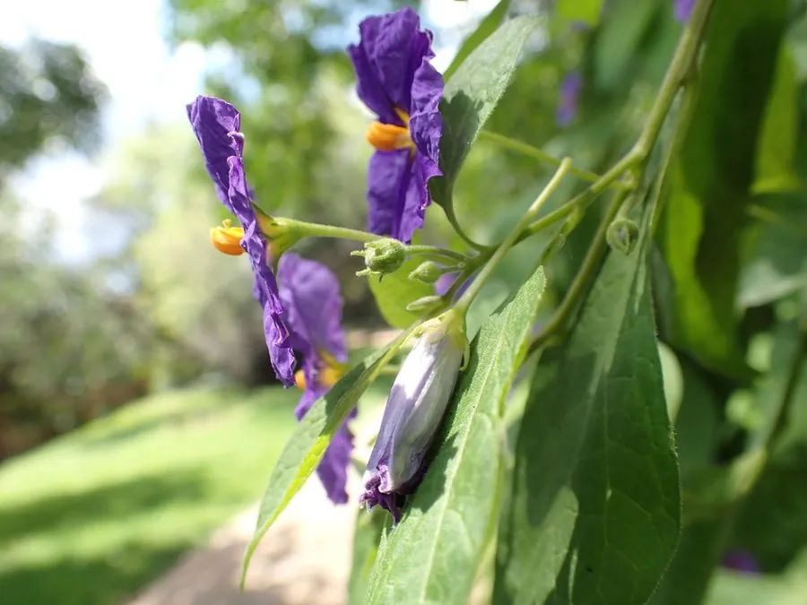

灌木与花木 · 植物界
蓝花茄 Lycianthes rantonnetii

茄科蓝花茄属常绿灌木，花冠蓝紫色、五裂似茄花，花期长、花量大，是南方庭园与盆栽的常见观赏花木。
- 分类
- 门被子植物门纲木兰纲目茄目科茄科属蓝花茄属
- 栖息环境
- 南美南部亚热带灌丛，喜温暖、阳光充足，不耐寒
- 地理分布
- 原产阿根廷、巴拉圭；中国华南、西南及世界温暖地区栽培
- 保护级别
- IUCN 暂无评估；栽培广泛，野生种群未受明显威胁
物种志
蓝花茄为常绿灌木，高 1–2 米，分枝细密，茎绿色。叶片卵形至椭圆形，长 4–8 厘米，全缘，互生。花单生或数朵聚生叶腋，花冠蓝紫色，直径 3–4 厘米，檐部 5 裂，中心有黄色花药，形似茄子花；果实为红色浆果，球形。
本种原产阿根廷、巴拉圭等南美南部地区，喜温暖、阳光充足的环境，在中国华南与西南常作盆栽或庭园花灌木。它花期长、花量大，蓝紫色花朵在阳光下十分醒目，可通过修剪培养成花球或小乔木状。蓝花茄属于茄科，植株含有茄碱类生物碱，果实与叶片不可食用，误食可引起胃肠不适，栽培时需注意儿童与宠物。冬季温度低于 5℃ 时需移入室内。
形态与习性
- 株高1–2 米，分枝细密
- 花期5–11 月，花蓝紫色
- 果期秋季，浆果红色
- 光照喜光，夏季适当遮阴
- 水分喜湿润，忌积水
- 土壤疏松肥沃的微酸性壤土
- 毒性含茄碱类生物碱，果实不可食用
趣味知识
- 蓝花茄的花形与茄子花非常相似，因此得名“蓝花茄”。
- 它的花中心有鲜黄色的花药，与蓝紫色花冠形成强烈对比。
- 蓝花茄原产南美，19 世纪传入欧洲后成为温室观赏植物。
- 它可通过修剪养成花球或小树形，是盆栽造型的常用材料。